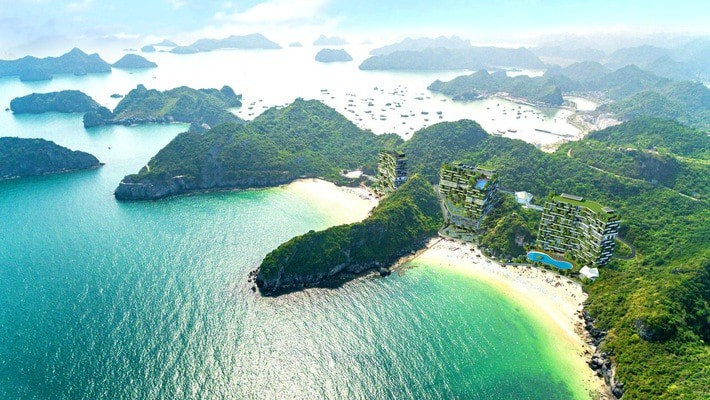

Các Bãi Biển Đẹp
1.Vịnh Hạ Long

Vịnh Hạ Long là Di sản thiên nhiên thế giới, nổi tiếng với hàng hóa đá vôi thời kỳ mọc lên giữa mặt nước xanh ngọc. Cảnh quan nơi đây mang vẻ đẹp Huyền bí và hùng tráng, đặc biệt là các hang động như Hang Sửng Số, Hang Luồn, Động Thiên Cung. Du khách có thể trải nghiệm du thuyền, chèo thuyền kayak, ngắm hoàng hôn trên vịnh – tất cả tạo nên cảm giác thư thái và ấn tượng khó quên.
2.Đảo Cô Tô

Cô Tô nổi tiếng với vẻ đẹp hoang sơ, nước biển trong vắt và bãi cát trắng dài như kem. Những điểm đến hấp dẫn như bãi Hồng Vàn, Và Chảy và con đường tình yêu ven biển luôn thu hút du khách mỗi mùa hè. Không khí trong lành, Yên bình, cùng hải sản tươi ngon khiến Cô Tô trở thành lựa chọn hoàn hảo cho những ai muốn nghỉ dưỡng và trải nghiệm biển đảo còn nguyên nguyên tự nhiên.
3.Cát Bà

Cát Bà là quần đảo lớn nhất Hải Phòng, kết hợp hài hòa giữa biển – rừng – núi . Vườn quốc gia Cát Bà sở hữu hệ sinh thái đa dạng, có loài voọc Cát Bà quý hiếm. Các bãi tắm như Cát Cò 1, 2, 3 đẹp và thuận tiện chuyển. Ngoài ra, du khách có thể tham quan làng chài Việt Hải, vịnh Lan Hạ – một trong những vịnh đẹp nhất thế giới, với nước xanh trong và nhiều hoạt động như chèo thuyền kayak, chèo sup, lặn ngắm san hô.